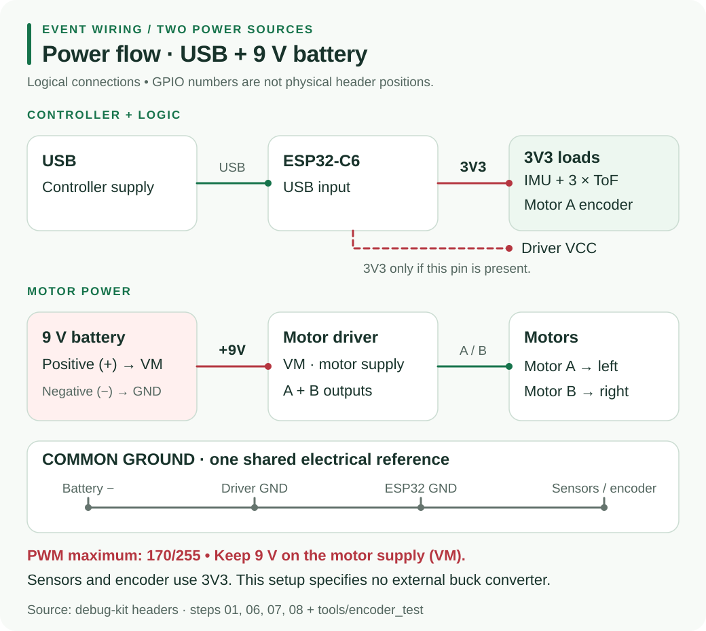

Resource Hub / Hardware / H5
H5 · PowerUSB Logic and Motor Battery Power
The debug setup powers the ESP32-C6 from laptop USB and driver VM from a separate 9 V motor battery, with a shared ground. The debug code does not specify a standalone buck-converter configuration: it does not define a 2S battery, a regulated 5 V system rail or a buck connection to the controller.
Open the debug checks and full sketches →
01Wiring overview

02Wire the two power paths
Disconnect USB and the motor battery before changing connections.
| Source / connection | Destination |
|---|---|
| Laptop USB | ESP32-C6 USB connector: controller power and programming |
| ESP32 3V3 | IMU VCC, every ToF VIN, encoder VCC when fitted |
| ESP32 GND | sensor/encoder grounds, driver GND and motor battery negative |
| Separate 9 V motor battery positive | driver VM |
| Motor battery negative | driver GND and ESP32 GND |
| Driver Motor A / Motor B outputs | left / right motor power wires |
| Driver VCC, only if present | ESP32 3V3 |
| Driver STBY / EN / SLP, only if present | HIGH at 3V3, following the step 7 comments |
All three grounds must be joined so the GPIO signals have a common reference. The positive supplies stay on their specified paths: motor battery to VM, USB to the controller.
Never connect the motor battery to a GPIO, controller 3V3, sensor power or encoder VCC. Encoder wires are separate from motor power wires. Do not add an external buck output to the controller in this debug arrangement.
Motor signals are DIR1 GPIO0, PWM1 GPIO2, DIR2 GPIO3, PWM2 GPIO10. See the motor wiring guide and controller pin map.
03Prove power in stages
- Keep the motor battery disconnected. Plug in USB and run 01_led_red: expect solid red and an
aliveline each second at 115200 baud. - Add sensors on 3V3, GND, SDA6 and SCL7. Follow the debug sequence and confirm PASS before motor tests.
- Disconnect power. Check battery polarity, VM, common ground, DIR/PWM and any VCC/enable pins actually present.
- Raise the wheels and clear your hands. With USB controller power and the motor battery, run 07_motor_1: green forward two seconds, red stop one second, blue reverse two seconds, red stop one second.
- Add Motor B for 08_motors_2: forward, backward, spin left and spin right, with stops between actions.
Motor tests start automatically. Disconnect power if wiring heats up or the controller repeatedly resets; inspect connections before retrying.
04Preserve the PWM cap
With the 9 V battery, motor PWM is capped at 170/255, described in the comments as about 6 V average for the N20 motors. Steps 7 and 8 run at 140; the encoder test runs at 85. Do not raise SPEED_MAX. PWM limits duty cycle; it does not create a regulated 6 V rail.
Unplug the motor from the driver before uploading or running pin_test. This diagnostic drives PWM fully HIGH and could apply the full 9 V across the 6 V motor.
05Troubleshooting
| Symptom | Practical check |
|---|---|
| No controller LED or USB port | check the USB connector and try a data-capable cable |
| LED cycles but motor stays still | confirm battery positive at VM, joined grounds and PWM/DIR jumpers |
| Motor hums without turning | check for a jam or battery sag under load; use motor_sweep |
| Sensors disappear after adding wiring | disconnect the addition; check 3V3/GND and the shared bus |
| Controller resets when motors start | inspect USB power, shared ground, loose wires, shorts and motor wiring near sensor leads |
| Encoder count stays zero while spinning | check encoder VCC → 3V3, GND and C1 → GPIO21; see encoder_test |
A standalone battery-powered controller needs a separately specified power design. The debug sketches provide no buck model, input range, output setting or standalone controller-power wiring to reproduce here.